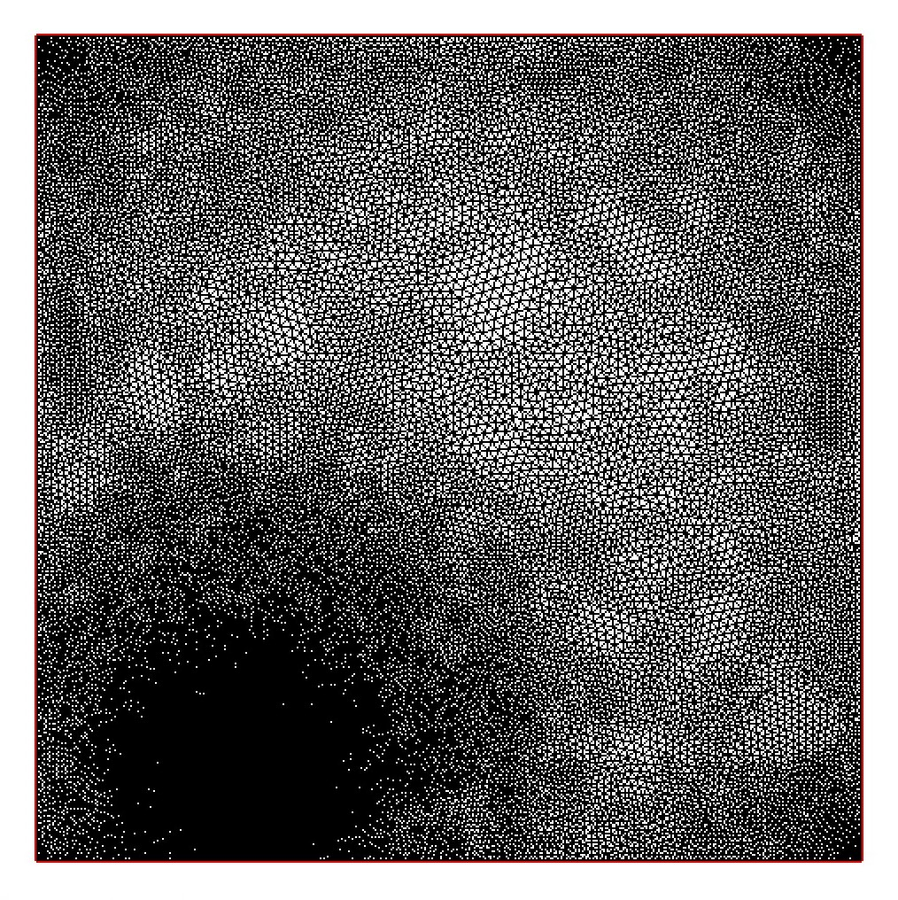
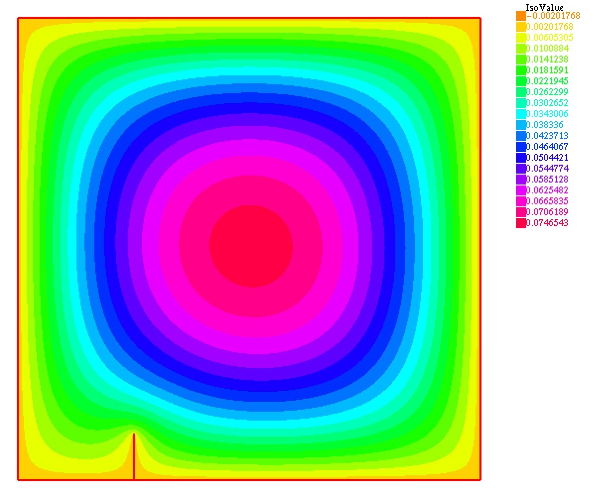

|
RiverSim
2.4.2
River Simulation Program
|
|
RiverSim
2.4.2
River Simulation Program
|
As it appearred, writing a simulation program is only first half of solution. Next is testing, parameter adjustment, running simulations, processing of results, making conclussions etc.
This section is dedicated to parameter adjustment and testing.
RiverSim program can accomplish two main things:
These options are controled by program option –simulation-type(or -t, see ./riversim -h for details).
RiverSim program has a lot of parameters and a lot of them impact accuracy of results, but also time of calculations. To figure out "optimal" parameters is hard.
For this purpose was created shell script: parameter_lookup.sh. It itterates over some most important parameters for accuracy in the third "development" mode of program. Also it runs in each program in parallel, this feature drastically improves perfomance. Also parameter_lookup.sh can be used as example for writing other scripts.
source code of parameter_lookup.sh
#!/bin/bashIllustratrion steps of how freefem++ test program works:
| Boundaries setup | Mesh generation | Adaptive mesh | Solution | Integration around tips |
|---|---|---|---|---|

| 
|

|

| 
|
Test values:
This script implements same solution to FreeFem++ but in high level language Wolfram Mathematica.
Mathemamtica program source code
| Boundaries setup | Refined mesh | Solution |
|---|---|---|

| 
| 
|
Test values:
Solving FEM is a lot about finding of golden ration, some optimal parameter values. On one side we have precission, and on the other - time. One of the biggest impact, on solution, is done by mesh. Program uses FEM which needs meshing of region, and there are regions where solution changes slowly(centrum), and very fast - around tips. So the problem is to find some mesh configuration, which will fit solution with less number of elements.
FreeFem solution already uses function which constrains element size, in such way that mesh is smallest at tip, and gets coarser far away from tip. Currently FreeFem and riversim uses next heuristic function, to constrain size of mesh element:
\[ \frac{\beta}{\alpha+exp(-\frac{r}{r_0})} \]
where, \(\beta, \alpha, r_0\) - parameters, and \(r\) - distance to tip point. But how about all other possible types of function, like these:
\[ const \\ \alpha r \\ \alpha r^n \\ E^r \]
Does they give better solution with less resources? Lets find out.


Next plots show value of integral over whole rectangular region \(\oint solution(x,y) dx dy\):
| All test functions | Without the worst one |
|---|---|

Integral value as function of mesh elements number | 
Integral value as function of mesh elements number |
From these plots can be seen that \(\alpha\sqrt{r}\) converge fastest. But if we will consider another target value instead of whole region integral, like integral over circular region aroud tip(which is very important to series parameters calculation) \(\oint_{|(x,y)-\vec{R_{tip}}|<r_0}^{ }solution(x,y)dxdy\), then convergence plot will look like this:

Now best mesh constraint area function is \(\alpha r^{3/2}\), which is worst in previous case of whole region integral.
Results are contradictive and trivial, becouse in case of whole region integral \(\alpha \sqrt{r}\) gives small mesh elements on whole region. In case of tip integral \(\alpha r^{3/2}\) - gives small elements near tip.
Wolfram Mathematica provides a lot of builtin numerical functions. Some functions encapsulates a lot of functionality inside, which are controlled by parameters. For example NItegrate and NDSolve, which are used for solving PDE and evaluation of series parameters, dependce on few very important parameters: AccuracyGoal and PrecisionGoal. These parameters have big inpact on precision but also on evalution time. The question is straightforward - what are the optimal values for them?

As can be seen from plots values AccuracyGoal ~= 5 and PrecisionGoal ~= 6 gives good precision in small evaluation time.
 1.8.13
1.8.13